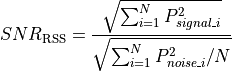

WSF_COHERENT_SENSOR_PROCESSOR¶
- processor WSF_COHERENT_SENSOR_PROCESSOR¶
processor <name> WSF_COHERENT_SENSOR_PROCESSOR processor Commands ... Platform Part Commands ... sensors ... end_sensors detection_threshold ... use_target_result ... coast_time ... result_processing_type ... fusion_method ... message_length ... message_priority ... end_processor
Overview¶
WSF_COHERENT_SENSOR_PROCESSOR provides for Coherent Sensor capabilities that include the ability to process multiple sensor WsfEM_Interaction results (i.e. non-local results) into a single interaction result (local result) for detection and track reporting. This processor will based upon the result_processing_type calculate a local result from a non-local result and use fusion to calculate the local result location (i.e. measurement) from the non-local results.
Note
If an update_interval is specified then the sensor or target results will be queued until the next update interval and batch processed. If an update_interval is not specified then the sensor or target results will be processed as each target is updated by each sensor.
The processor is typically used in the following construct:
platform_type ... sensor sensor-1 WSF_RADAR_SENSOR ... # Forward the tracks to 'track_proc' processor track_proc end_sensor sensor sensor-2 WSF_RADAR_SENSOR ... # Forward the tracks to 'track_proc' processor track_proc end_sensor processor cs_proc WSF_COHERENT_SENSOR_PROCESSOR ... # Forward the extracted 'tracks' to 'track_proc' processor track_proc # Connect to sensors to collect 'interaction' data for processing sensors sensor sensor-1 sensor sensor-2 end_sensors end_processor processor track_proc WSF_TRACK_PROCESSOR ... # Implicitly takes the tracks from 'cs_proc' and updates the track_manager end_processor end_platform_type
Commands¶
- sensors … end_sensors¶
sensors sensor <sensor-name> platform_sensor <platform-name> <sensor-name> end_sensors
- sensor <sensor-name>¶
Specifies the name of the sensor, <sensor-name>, on the same platform as the processor.
- platform_sensor <platform-name> <sensor-name>¶
Specifies the name of the sensor, <sensor-name>, on an external platform with name <platform-name>.
- detection_threshold <dbratio-value>¶
An alternative method of defining the receiver’s detection threshold. The value can be entered here for readability of the input file.
Default: 3.0 dB
- use_target_result <boolean-value>¶
Specifies if ‘true’ that the target result from each sensor should be used. If ‘false’ use each of the sensor results, a culmination of each mode and beam dependent upon sensor capabilities.
Default: false
- coast_time <time-value>¶
Specifies the maximum amount of time that may elapse between updates before a track is dropped.
- result_processing_type [ SNR_BASED | RSS_BASED ]¶
Specifies the results processing type to be used to calculate the resulting Signal-to-Noise Ratio (SNR) from the non-local sensor or target results to the local result to be used in track formation.
Note
Note that fusion will take place with any type.
SNR_BASED - Use the best non-local result for forming the local result based on SNR, the best non-local result’s SNR and other data will replace the local result.
RSS_BASED - Use the Root of the Sums Squared (RSS) of the signal power coupled with the RMS of noise power for each of the non-local results with valid signal and noise power measurements to calculate the local results signal, noise and SNR.

Default: SNR_BASED
- fusion_method [ replacement | weighted_average | MTT(Multi-Target Tracker) mtt ]¶
Specifies the fusion algorithms used by the results processing.
A fusion algorithm combines information about a single entity from two or more sources into a coherent information set, e.g. a measurement or track.
replacement- Correlated measurements are fused according to a standard set of algorithms. Local measurement positions are replaced by nonlocal measurement positions.
weighted_average- Correlated measurements are fused according to a standard set of algorithms. Local measurement positions are combined with nonlocal measurement positions using the covariance matrices of the local and nonlocal measurement.
Note
If there is no covariance matrix associated with a nonlocal track, the track manager will attempt to use a measurement covariance matrix, generated from the track’s measurement errors in range, elevation, and bearing.
mtt - Correlated measurements and tracks are fused using the Multiple Target Tracker (MTT). If this method is selected, the correlation_method must also be mtt.
Default: replacement
- message_length <data-size-value>¶
Specify the logical length assigned to the track messages that are created from the image.
Default: 0 (use the value derived from the message_table )
- message_priority <integer-priority>¶
Specify the priority assigned to the track messages that are created from the image.
Default: 0 (use the value derived from the message_table )
Script Interface¶
The following methods extend the WsfProcessor script class by adding the following methods to it:
-
AddSensor(string aSensorName)
-
AddSensor(string aPlatformName, string aSensorName) Adds the sensor by name to the list of sensor on the WSF_COHERENT_SENSOR_PROCESSOR. If aPlatformName is omitted the sensor is assumed to be on the same platform as the processor.
-
RemoveSensor(string aSensorName)
-
RemoveSensor(string aPlatformName, string aSensorName) Removes the sensor by name from the list of sensor on the WSF_COHERENT_SENSOR_PROCESSOR. If aPlatformName is omitted the sensor is assumed to be on the same platform as the processor.